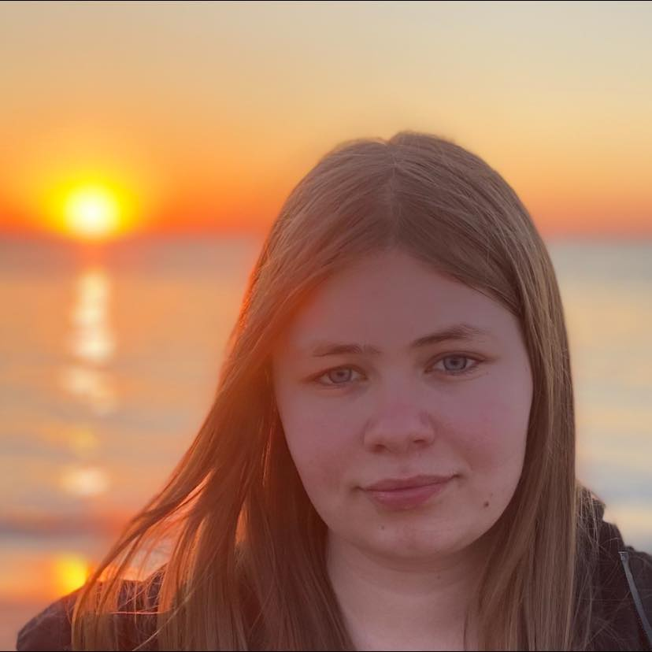

💗💗💗💗💗💗💗💗💗💗💗💗
Mit Navn er Camilla. Jeg bor og er født i Thisted. Jeg bor sammen med min mor, far og søster. Min søster anne, er 20 år gammel.
I 5. klasse skiftede jeg til Østre skole hvor jeg fik nogle nye menensker. Efter 9. klasse valgte jeg HTX som ingen af mine venner valgte. Så jeg mødte nogle nye mennesker igen og fik nogle nye fag.
I min fritid elsker jeg at se serie og film. Mange af de film og serier jeg ser er man i en anden verden. Ellers så spiller jeg computer hvor jeg har mødt nogle fantastiske mennesker. Jeg er self også sammen med venner. Der er vi tit i byen at hygge, eller hjemme ved en og hygger.
Melanie og Anne er mine venner.